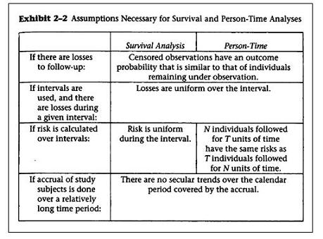

Assumptions: Cumulative Incidence and Incidence Rate
Lead Author(s): Jeff Martin, MD
Assumption No Temporal/Secural Trends
Calculating cumulative incidence with different follow-up times, assumes the probability of the outcome is not changing during the study period = no temporal/secular trends affecting the outcome.
- This assumption does not mean that the probability of the outcome is the same during all of the follow-up time. Remember that by moving everyone to the left to start at study time zero, you are guaranteeing that one-year of follow-up in follow-up or study time will be different calendar times for individuals who were enrolled in the study on different dates.
- So this concept requires that the probability is not changing over calendar time.
- It may well change over study time as for many diseases risk increases with age.
Assumption in Follow-up Starting Times
It should be clear that by assigning everyone the same starting time you are making the assumption that there are no calendar time trends that will affect your estimate of incidence. You have dropped calendar time, and hence trends associated with calendar time (often called secular trends), out of the analysis.
- For many studies this is probably a perfectly reasonable assumption.
- For one thing the difference in calendar time may be just a matter of months rather than years, so it would take a very rapidly changing trend to be important in a time frame of months.
For some situations, though, this may be a dubious assumption. For example, if one were enrolling subjects to study a new infectious disease during its introductory epidemic period (HIV, SARS, ebola, etc.), temporal trends might affect incidence estimates significantly.
Assumptions for Cumulative Incidence and Incidence Rate Calculations
Note that Szklo and Nieto in the table below use the headings Survival Analysis for cumulative incidence approach and Person-time for the incidence rate approach in analyzing data that features time to an event. These are the assumptions of both methods.
- Note that they have the same assumptions with the exception of how the risk is calculated over intervals.

References
Szklo, M., & Nieto, F. (2007). Epidemiology: Beyond the Basics (2nd Edition ed.). Boston: Jones and Bartlett Publishers.